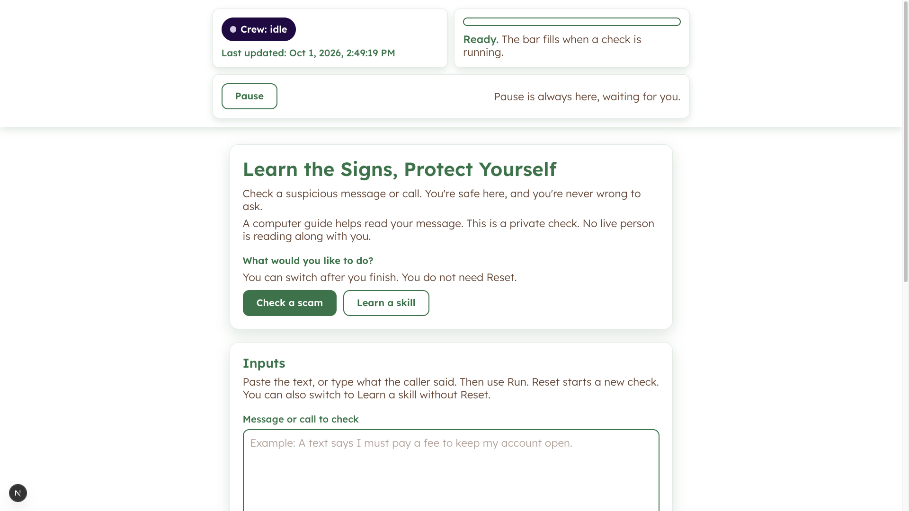
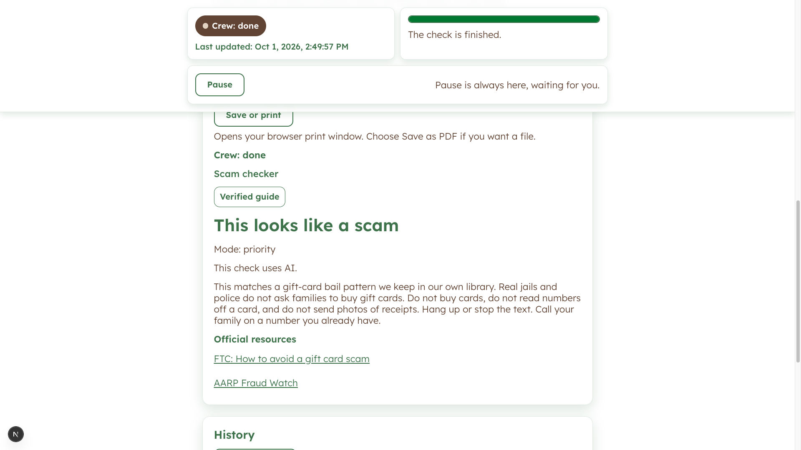
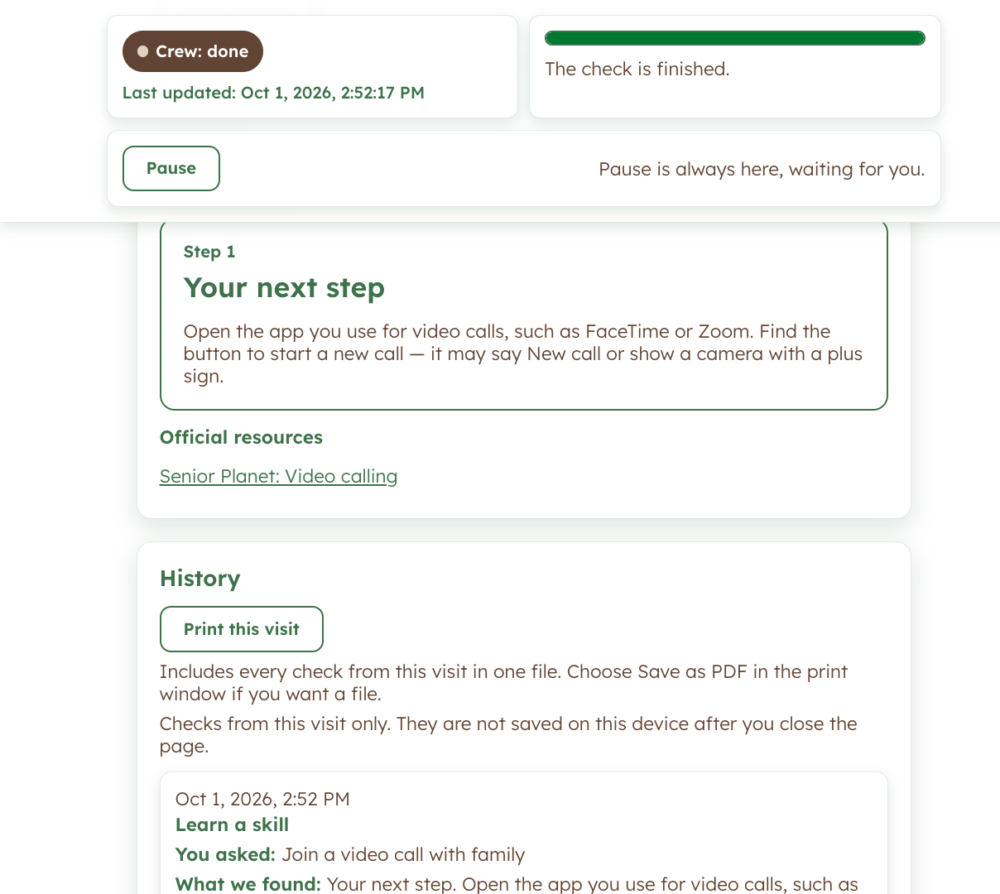
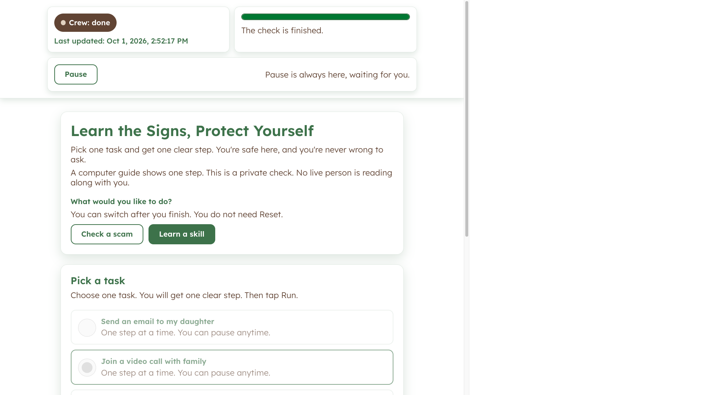

Senior Digital Literacy
Cohort 6 CrewAI Flow Next.js
Two clear paths — learn one step at a time, or check whether a message is a scam — with patient coaches who never rush an older adult.

Problem & Target Users
Most older adults in the U.S. own a smartphone, but many do not feel confident using it. Fraud losses for adults 60+ keep rising, and existing tools treat scam safety as an add-on. The tone is often rushed or shaming.
This is for adults about 65–79 using their own phone or tablet at home, and for family caregivers who help someone get started.
Solution Overview
Senior Digital Literacy is a text coach with two explicit paths: check a suspicious message, or learn one life-goal step. A CrewAI Flow intent gate sends each turn to exactly one conversational agent, the tutor or the scam checker.
The page stays calm and large-type. A verified local library overwrites model wording when a known scam pattern matches, so the safety advice is owned content rather than an open-web guess.
Key Features
- Two paths on one screen – “Learn the Signs, Protect Yourself” toggles between Check a scam and Learn a skill.
- Scam check – Paste a message and get a calm verdict, plus a verified guide when it matches the owned library.
- One-step tutor – Pick a life goal, such as a family video call, and receive a single Step 1 card.
- Visible crew status – A banner and progress bar show idle, running, and done, with Pause always available.
- Print without the paste – Save or print the result, or the visit, without putting the pasted message on the sheet.
- Shame-free disclosure – Copy states the guide is a computer, not a person reading along.
- Safety routing – An explicit button wins, and a scam-safety override can move the turn to the scam checker.
Multi-agent AI Crew
A CrewAI Flow routes each turn to one agent. The intent router is a flow step, not a third chat persona. Progress is a backend concern, not another agent in the conversation.
| Agent | Role | Tools / Integrations | Trigger |
|---|---|---|---|
| Intent router | Classify the session and pick Tutor or Scam. No chat UI. | classify_intent, safety override, session path | Every turn: button choice, natural language, or scam-safety override |
| Your tutor | One verified step at a time. Patient Mode when extra help is needed. | Verified tutorial guidance, Claude | Learn a skill, or a tutoring goal |
| Scam checker | Calm risk read and a safe next action. Priority Mode for an active scam. | Local scam library only, Claude | Check a scam, or a safety override |
Technical Architecture
- Frontend – Next.js 15, React 19, TypeScript, Tailwind CSS.
- Backend – Python 3.12, FastAPI, CrewAI Flow, Anthropic Claude.
- Data / storage – Owned scam-pattern library in the app. PostgreSQL and pgvector are specified for later; this demo does not run a database.
- Integrations – Anthropic Claude API. No open-web search on the scam checker.
Deployment
The verified demo is Docker Compose on the laptop, bound to 127.0.0.1, with a health check on the API. Railway config is scaffolded as a public Next.js web service and a private FastAPI API. It is not live. GitHub Actions runs lint, test, and build only.
Screenshots



My Role & Learnings as Agentic Architect
- Kept the intent router as a Flow step so the chat never grows a third persona that can tutor and judge scams in the same voice.
- Let an explicit button win, and let a safety override force the scam path, instead of trusting a classifier alone.
- Grounded scam replies in an owned library so a match replaces model text with verified guidance.
- Left agent memory off and kept the demo on loopback, because an unauthenticated chat endpoint spends the model key.
- Shipped the two proof paths on one page and named what is still out of scope, including signup, caregiver progress, and multi-step lessons.